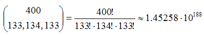

To use this model, you will have to install NetLogo 5.3.1 (free and open source) and download the model itself. Unzip the downloaded file and click on segregation.nlogo
Schelling's model of spatial segregation is a milestone in the study of emergent global phenomena based on local social interactions (Schelling 1969; Schelling 1971; Schelling 1978). Schelling's model illustrates how clearly distinctive patterns of spatial segregation (e.g. ghettos) can emerge even if individuals are only weakly segregationist.
Almost at the same time as Schelling, Sakoda (1971) proposed a very similar model based on the same principles. To analyse their models, Schelling and Sakoda used a chessboard and several coins of different colours. Since then, there have been plenty of studies that consider different versions and refinements of these models (Aydinonat 2007). In most cases, the more recent models have replaced the chessboard and the coins with computational grids and agents (Benenson and Torrens 2004).
In this appendix we analyse a computer implementation of Schelling's model based on Edmonds and Hales' (2005). The spatial structure of the model is a 2-dimensional grid of 20×20 cells. There are 133 green agents and 133 red agents who are initially located on the grid at random. Agents may be happy or unhappy. Agents are unhappy if the proportion of other agents of its same colour in its Moore neighbourhood of radius 1 is below a certain critical threshold (which is a parameter of the model); otherwise the agent is said to be happy. In each iteration of the model one unhappy agent is randomly selected to move to a random empty cell in the lattice [1].
This model can be represented as a time homogeneous Markov chain. For that, we can define the state of the system as a vector of dimension 400 where each component corresponds to a certain cell in the grid. Every component of this vector can take 3 different values to denote whether the cell is empty, occupied by a green agent or occupied by a red agent. With this definition the number of possible states is considerable:
| Number of possible states: |  |
Deriving the whole transition matrix of a system of such dimension is quite an effort. Having said that, note that most values in the transition matrix are zero, and it is not difficult to calculate any given transition probability. Assuming the system is in state i:
Therefore, in particular, the transition probability between any two states that differ in more than 2 values is necessarily zero. Also, any state i where all agents are happy is absorbing, i.e. the system will stay in it with probability pi,i = 1.
Interestingly, with these parameter values, there are always absorbing states regardless of the critical threshold value [2]. Since it is possible to reach (at least) one absorbing state from any given state, we can assert that there isn't any closed communicating class with more than one state in the model. Therefore, using Proposition 2 we can partition the state space as follows: S = {abs1} ∪ {abs2} ∪ … ∪ {absk} ∪ T, where abs1, abs2, … , absk are absorbing states, and T is the union of all non-closed communicating classes. Taking into account Proposition 3 we can conclude that sooner or later the THMC will enter one of the absorbing states and stay in it forever. The probability of ending up in any particular absorbing state depends on the initial conditions.
In this model, the higher the value of the critical threshold the fewer the number of absorbing states (states which are absorbing for low values of the critical threshold may become transient for higher values of the threshold). This implies that, in general, simulations with high values of the critical threshold tend to last longer until they reach an absorbing state. Sometimes it may be necessary to wait for a very long time until convergence is achieved. This argument explains the counterintuitive results obtained by Edmonds and Hales (2005), who observed that the average proportion of neighbours of the same colour as a function of the critical threshold decreased for critical thresholds higher than 0.65. This is counterintuitive because it seems to suggest that –beyond a certain point– more segregationist preferences lead to weaker patterns of segregation.
The crucial point to realise is that Edmonds and Hales (2005) compute the statistics running the model for a certain number of time-steps. If the simulations were run for long enough, an absorbing state would be reached sooner or later, and therefore the final average proportion of neighbours of the same colour would be necessarily greater than or equal to the critical threshold. The picture is different when simulations are run for a limited number of iterations. For low critical thresholds there is a high probability of reaching an absorbing state in a short time but, on the other hand, the average proportion of same-colour neighbours in some absorbing states may be quite low. As the critical threshold increases, some of the previously absorbing states with lower average proportion of same-colour neighbours become transient but, on the other hand, the system tends to wander around for longer before reaching an absorbing state. Due to the highly stochastic nature of the model, the system –in its way towards an absorbing state– may visit areas of the state space with very low average proportions of same-colour neighbours, and the simulation may stop when the system is in one of these states. However it is important to emphasise that sooner or later the system will end up in an absorbing state, so we would expect to see the counterintuitive result disappear if the model were to be run until an absorbing state is reached. Having said that, the length of time required to reach an absorbing state may well exceed the time frame of the underlying social process being modelled, so our analysis does not diminish the value of Edmond and Hales' findings in any way.
The Schelling-Sakoda model has been generalised using other topologies and different types of (regular and irregular) neighbourhoods (Flache and Hegselmann 2001; Hegselmann and Flache 1998). These more sophisticated models can still be analysed using the Markov chain framework.
Schelling's model of spatial segregation is a milestone in the study of emergent global phenomena based on local social interactions. Schelling's model illustrates how clearly distinctive patterns of spatial segregation (e.g. ghettos) can emerge even if individuals are only weakly segregationist.
Copyright (C) 2008 Luis R. Izquierdo, Segismundo S. Izquierdo, José M. Galán & José I. Santos
This program is free software; you can redistribute it and/or modify it under the terms of the GNU General Public License as published by the Free Software Foundation; either version 3 of the License, or (at your option) any later version.
This program is distributed in the hope that it will be useful, but WITHOUT ANY WARRANTY; without even the implied warranty of MERCHANTABILITY or FITNESS FOR A PARTICULAR PURPOSE. See the GNU General Public License for more details.
You can download a copy of the GNU General Public License by clicking here; you can also get a printed copy writing to the Free Software Foundation, Inc., 51 Franklin Street, Fifth Floor, Boston, MA 02110-1301, USA.
Contact information:
Luis R. Izquierdo
University of Burgos, Spain.
e-mail: lrizquierdo@ubu.es
This program has been designed and implemented by Luis R. Izquierdo, Segismundo S. Izquierdo, José M. Galán & José I. Santos
AYDINONAT N E (2007) Models, conjectures and exploration: An analysis of Schelling's checkerboard model of residential segregation. Journal of Economic Methodology, 14(4), pp. 429-454
BENENSON I and Torrens P M (2004) Geosimulation: automata-based modeling of urban phenomena. Chichester, UK: John Wiley and Sons.
EDMONDS B and Hales D (2005) Computational Simulation as Theoretical Experiment. Journal of Mathematical Sociology, 29(3), pp. 209-232.
FLACHE A and Hegselmann R (2001) Do Irregular Grids make a Difference? Relaxing the Spatial Regularity Assumption in Cellular Models of Social Dynamics. Journal of Artificial Societies and Social Simulation, 4(4)6. http://jasss.soc.surrey.ac.uk/4/4/6.html.
HEGSELMANN R and Flache A (1998) Understanding Complex Social Dynamics: A Plea For Cellular Automata Based Modelling. Journal of Artificial Societies and Social Simulation, 1(3)1. http://jasss.soc.surrey.ac.uk/1/3/1.html.
SAKODA J M (1971) The Checkerboard Model of Social Interaction. Journal of Mathematical Sociology, 1(1), pp. 119-132
SCHELLING T C (1969) Models of Segregation. American Economic Review, 59(2), pp. 488-493
SCHELLING T C (1971) Dynamic Models of Segregation. Journal of Mathematical Sociology, 1(2), pp. 143-186
SCHELLING T C (1978) Micromotives and macrobehavior. New York: Norton.
WILENSKY U (1999). NetLogo. Evanston, IL Center for Connected Learning and Computer-Based Modeling, Northwestern University. http://ccl.northwestern.edu/netlogo/.
1 There are alternative definitions of the dynamics of the basic model. For instance, one can define a model where in each iteration every agent (rather than just one) is given the opportunity to move. In that case, the order in which agents are considered in each iteration may be predefined (as in Edmonds and Hales (2005)) or random. Each of these possible models may have different state definitions and different transition matrices, but all the conclusions provided in the analysis section of this appendix are valid for any of these alternative definitions.
2 The state of absolute segregation (i.e. two monochromatic subpopulations separated by no man's land) is absorbing regardless of the critical threshold.